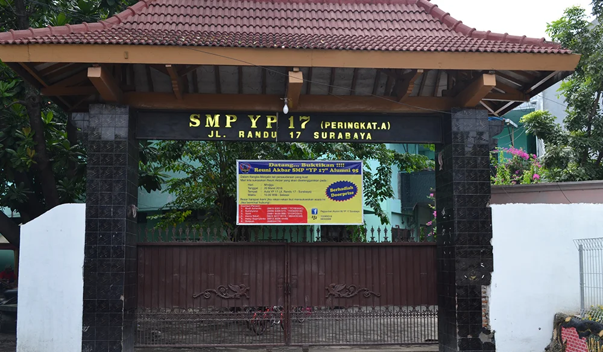
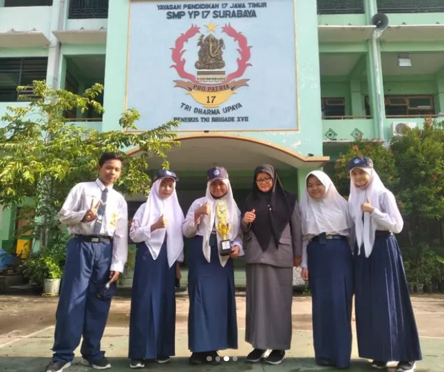
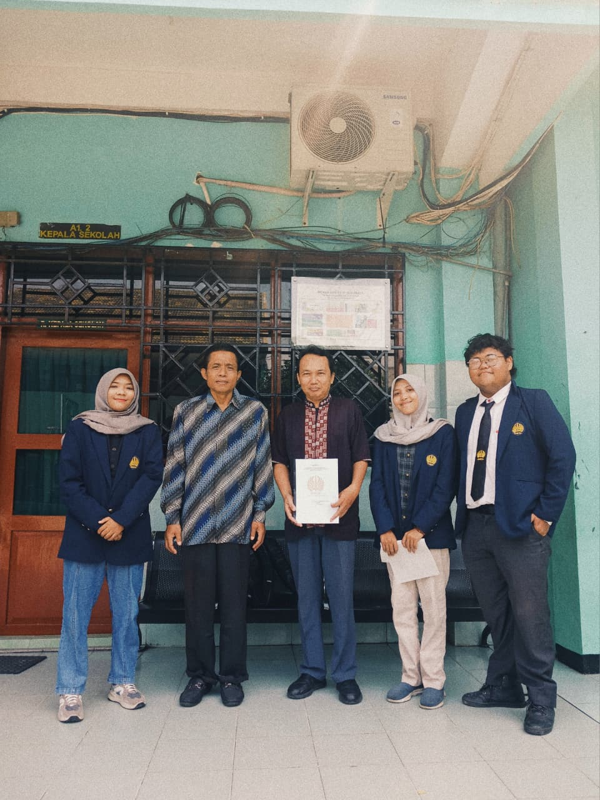

Selamat Datang Di Smp Yp 17 Surabaya!
Mari Belajar Bersama
Untuk Menggapai Mimpi Dimasa Depan
Mendukung pengelolaan data akademik sekolah
01
0
Siswa Aktif
02
0
Guru & Karyawan
03
0
Alumni Tersebar
04
0
Lulusan SMA Favorit